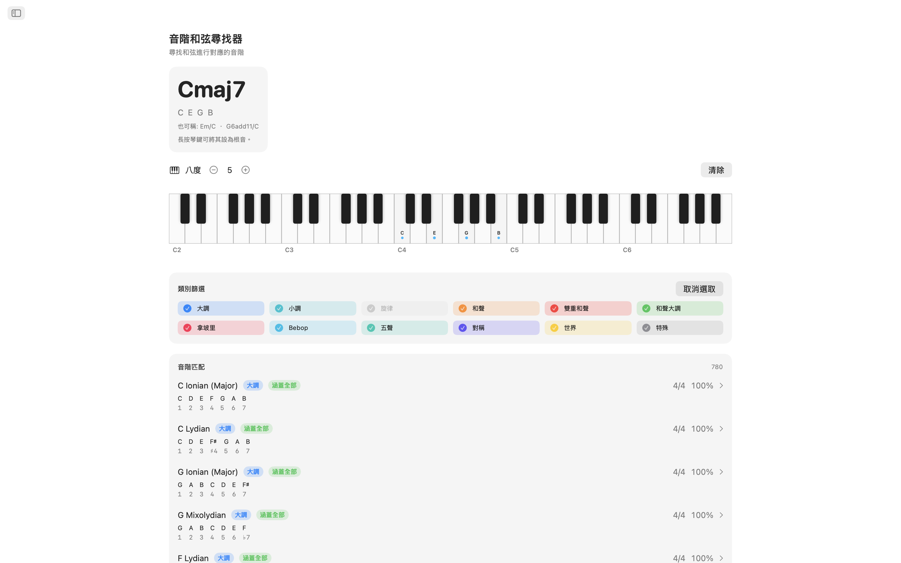
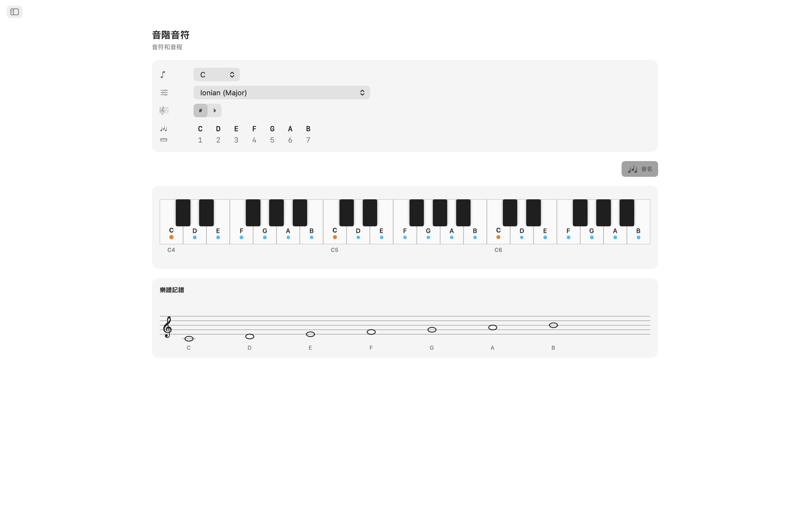
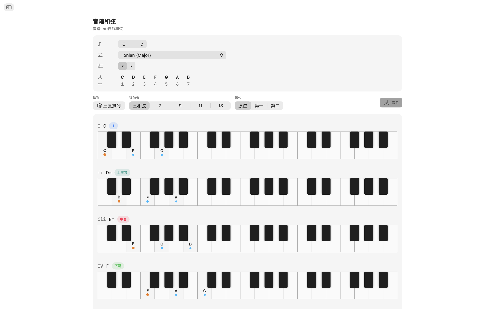
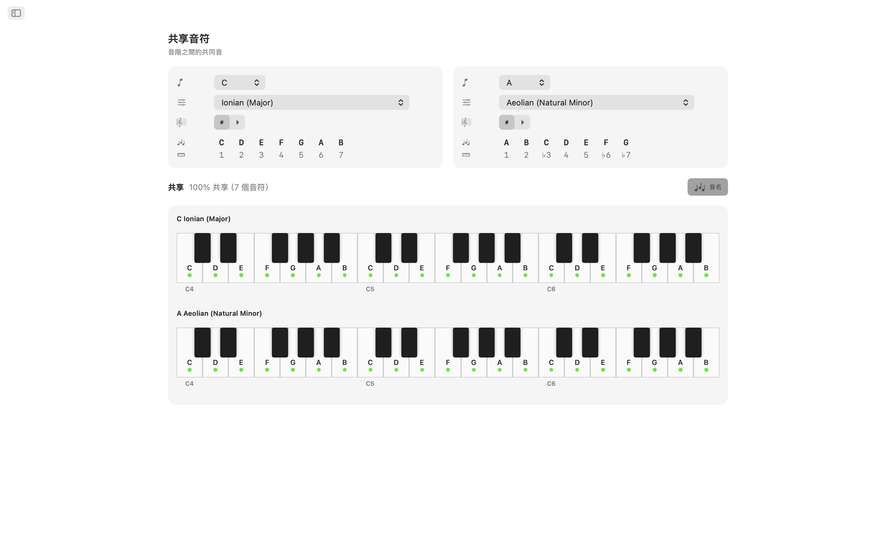
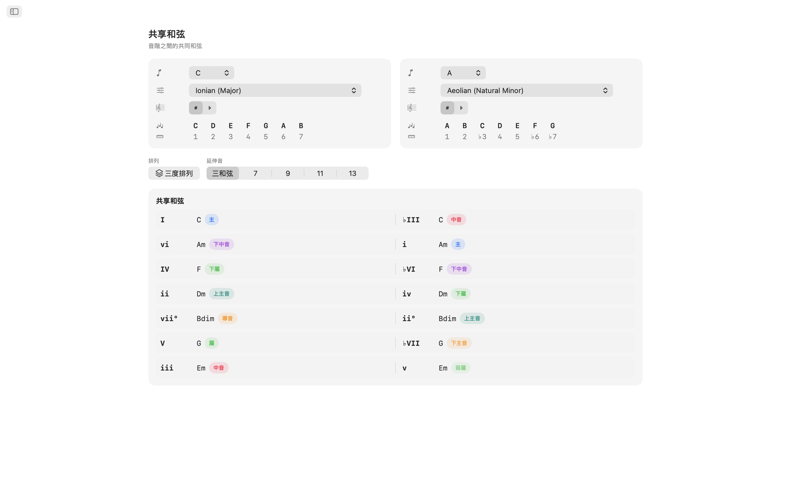
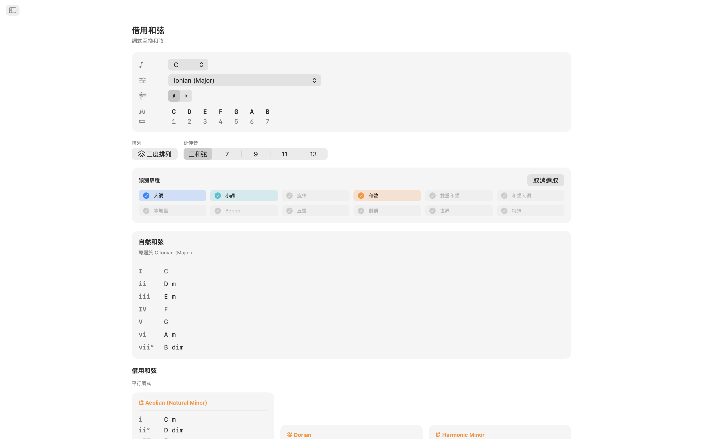
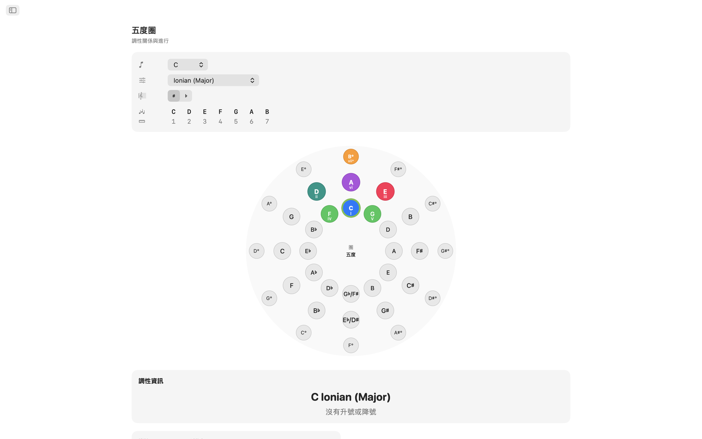
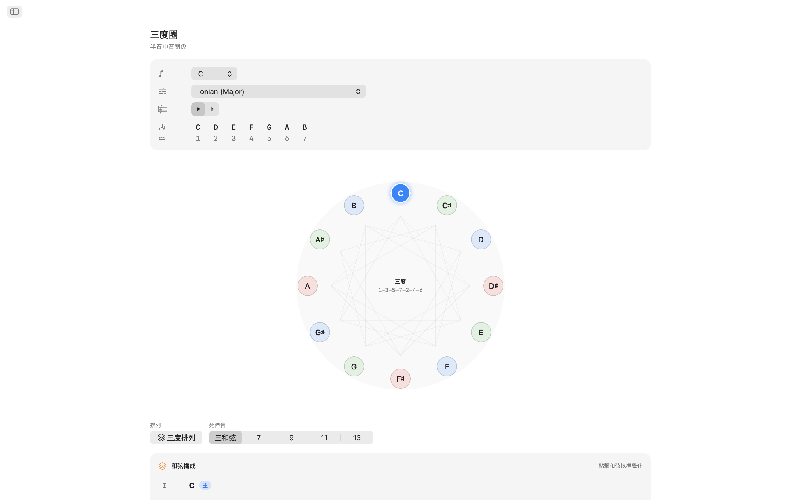
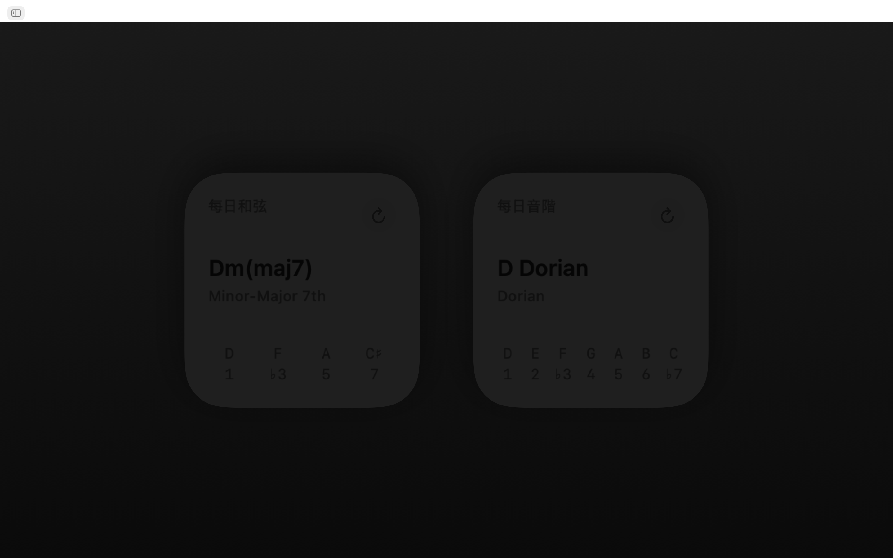
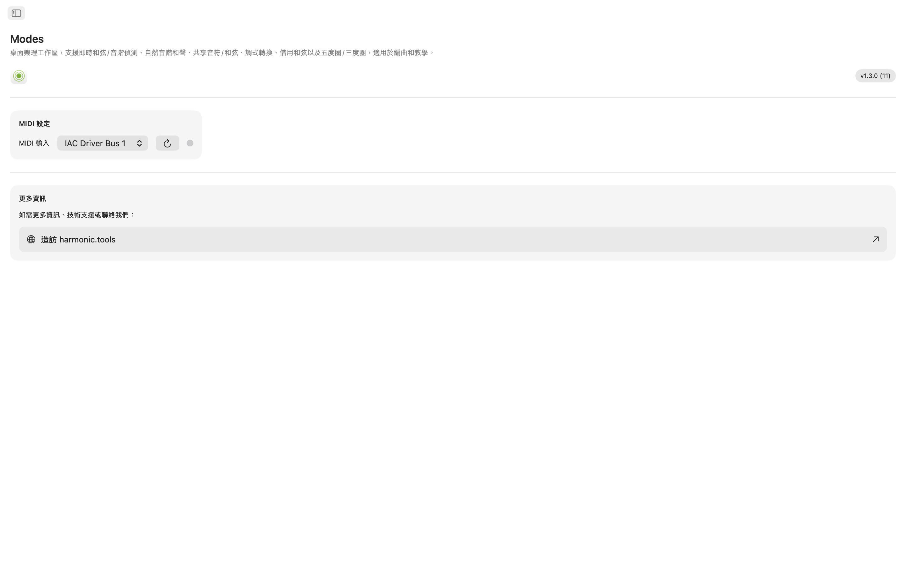

Modes macOS版
適用於macOS的互動樂理實驗室。無論您是在創作歌曲、備課還是探索新的和聲領域，Modes都能讓您即時存取音階、和弦、聲部排列和轉調路徑，集於一個簡潔的側邊欄導覽應用程式中，與您的DAW並排使用。現在加入Siri、Shortcuts、Spotlight搜尋和Notification Center小工具。
- 音階與和弦查找器，支援MIDI + 螢幕鍵盤
- 65種音階 · 21種和弦類型 · 8種聲部排列族
- 共同音符、共同和弦、借用和弦
- 互動五度圈 + 三度圈
- Siri、Shortcuts、Spotlight和Notification Center小工具
截圖
包含隨網站主題切換的淺色和深色截圖。












功能特色
- 音階與和弦查找器：在互動多八度鍵盤上彈奏音符或連接MIDI控制器。Modes可即時識別您演奏的和弦：大調、小調、減和弦、增和弦、延伸和弦、掛留和弦等。它按音符覆蓋率對每個匹配的音階進行排名。按音階類別（自然音階、旋律小調、和聲小調、五聲音階、Bebop、對稱、世界音階等）篩選結果，精準鎖定您想要的音色。
- 65種音階與調式：從七種自然調式到旋律小調、和聲小調、雙重和聲、拿坡里、Bebop、五聲、藍調、全音、減音、增音以及世界音階如Hirajōshi、Kumoi、In Sen、Persian和Enigmatic。每種音階都標註了音程符號並在鍵盤上標示顯示。
- 調內音符：選擇任意根音和音階，查看在兩個八度上標示顯示的每個調內音符。即時視覺化哪些音符屬於該調以及根音的位置。
- 音階和弦：為您選擇的音階的每個音級生成自然三和弦或七和弦。查看羅馬數字、和弦名稱、和聲功能標籤（主功能、下屬功能、屬功能及30+詳細標籤）和聲部排列鍵盤展示，方便比較。
- 8種聲部排列：以三度疊置、sus2、sus4、六度、附加、四度疊置、五度疊置和強力和弦構建和弦。從三和弦到十三和弦可選，每個延伸音自動標註。
- 共同音符與共同和弦：並排比較任意兩個調。查看哪些音符重疊、哪些獨有、哪些和弦兩個調共享。這對於平滑轉調和重新和聲編配至關重要。
- 借用和弦：分析您的調內自然和弦以及來自平行調式的所有可借用選項，按來源調式分組。在不離開調性中心的情況下發現新鮮的和聲色彩。
- 五度圈：互動雙環圓（外圈大調，內圈自然小調）。點擊扇區可重新設定調性。一目了然地查看屬、下屬、關係調、平行調和相近調關係，帶有轉調難度標籤和調號詳情。
- 三度圈：在減音程循環圖上探索半音中間音關係。每個音級的大調和小調按鈕顯示中間音、關係調和平行調連接。非常適合電影配樂和新黎曼轉調規劃。
- MIDI支援：連接任何符合標準的MIDI鍵盤或控制器。演奏的音符與螢幕點擊無縫融合進行識別。
- Siri、Shortcuts與Spotlight：讓Siri或執行Shortcut顯示音階的音符、列出調內的和弦、識別音階或和弦、拼寫和弦、查找兩個音符之間的音程、移調音符或開啟五度圈和借用和弦。音階和和弦都已索引到Spotlight中，您可以直接從Spotlight搜尋它們。
- Notification Center小工具：將每日音階和每日和弦小工具加到Notification Center，每日接觸樂理。
專為桌面打造
- 完全離線運作——無需帳號、無廣告、無追蹤
- 原生macOS應用程式，側邊欄導覽
- 深色模式感知介面，跟隨系統外觀
- 等音記譜：自動、升號或降號
- 可調整視窗大小——與DAW並排使用
無論您是勾畫和弦進行的製作人、學習調式的吉他手、研究爵士和聲的鋼琴家還是備考樂理的學生，Modes都將深入的樂理知識呈現在您的桌面上。
樂理涵蓋範圍
應用程式內所有可用音階、調式、和弦、聲部排列、音程和和聲工具的完整參考，並附上每一項背後的確切音符公式。
音階與調式 共65種
每個音階皆以音程標記拼寫並在鍵盤上高亮顯示，支援自動、升號或降號等音記譜。
大調調式（自然音階）
| Ionian (Major) | 1 2 3 4 5 6 7 |
| Dorian | 1 2 ♭3 4 5 6 ♭7 |
| Phrygian | 1 ♭2 ♭3 4 5 ♭6 ♭7 |
| Lydian | 1 2 3 ♯4 5 6 7 |
| Mixolydian | 1 2 3 4 5 6 ♭7 |
| Aeolian (Natural Minor) | 1 2 ♭3 4 5 ♭6 ♭7 |
| Locrian | 1 ♭2 ♭3 4 ♭5 ♭6 ♭7 |
旋律小調（爵士小調）調式
| Melodic Minor (Jazz Minor) | 1 2 ♭3 4 5 6 7 |
| Dorian ♭2 (Phrygian ♮6) | 1 ♭2 ♭3 4 5 6 ♭7 |
| Lydian Augmented (Lydian ♯5) | 1 2 3 ♯4 ♯5 6 7 |
| Lydian Dominant (Lydian ♭7) | 1 2 3 ♯4 5 6 ♭7 |
| Mixolydian ♭6 (Aeolian Dominant) | 1 2 3 4 5 ♭6 ♭7 |
| Locrian ♯2 (Locrian ♮2) | 1 2 ♭3 4 ♭5 ♭6 ♭7 |
| Altered (Super-Locrian) | 1 ♭2 ♭3 ♭4 ♭5 ♭6 ♭7 |
和聲小調調式
| Harmonic Minor | 1 2 ♭3 4 5 ♭6 7 |
| Locrian ♮6 | 1 ♭2 ♭3 4 ♭5 6 ♭7 |
| Ionian ♯5 (Augmented Major) | 1 2 3 4 ♯5 6 7 |
| Dorian ♯4 (Ukrainian Dorian) | 1 2 ♭3 ♯4 5 6 ♭7 |
| Phrygian Dominant | 1 ♭2 3 4 5 ♭6 ♭7 |
| Lydian ♯2 | 1 ♯2 3 ♯4 5 6 7 |
| Super Locrian ♭♭7 (Altered ♭♭7) | 1 ♭2 ♭3 ♭4 ♭5 ♭6 ♭♭7 |
雙重和聲小調（匈牙利小調）調式
| Hungarian Minor (Double Harmonic Minor) | 1 2 ♭3 ♯4 5 ♭6 7 |
| Oriental (Mode 2) | 1 ♭2 3 4 ♭5 6 ♭7 |
| Ionian ♯2 ♯5 | 1 ♯2 3 4 ♯5 6 7 |
| Locrian ♭♭3 ♭♭7 | 1 ♭2 ♭♭3 4 ♭5 ♭6 ♭♭7 |
| Double Harmonic Major | 1 ♭2 3 4 5 ♭6 7 |
| Lydian ♯2 ♯6 | 1 ♯2 3 ♯4 5 ♯6 7 |
| Ultraphrygian | 1 ♭2 ♭3 ♭4 5 ♭6 ♭♭7 |
和聲大調
| Harmonic Major (Ionian ♭6) | 1 2 3 4 5 ♭6 7 |
| Double Harmonic Major (Byzantine) | 1 ♭2 3 4 5 ♭6 7 |
拿坡里小調調式
| Neapolitan Minor | 1 ♭2 ♭3 4 5 ♭6 7 |
| Lydian ♯6 | 1 2 3 ♯4 5 ♯6 7 |
| Mixolydian Augmented | 1 2 3 4 ♯5 6 ♭7 |
| Romani Minor (Aeolian ♯4) | 1 2 ♭3 ♯4 5 ♭6 ♭7 |
| Locrian Dominant | 1 ♭2 3 4 ♭5 ♭6 ♭7 |
| Ionian ♯2 | 1 ♯2 3 4 5 6 7 |
| Ultralocrian | 1 ♭2 ♭♭3 ♭4 ♭5 ♭6 ♭♭7 |
拿坡里大調調式
| Neapolitan Major | 1 ♭2 ♭3 4 5 6 7 |
| Leading Whole Tone (Lydian Augmented ♯6) | 1 2 3 ♯4 ♯5 ♯6 7 |
| Lydian Augmented Dominant | 1 2 3 ♯4 ♯5 6 ♭7 |
| Lydian Dominant ♭6 | 1 2 3 ♯4 5 ♭6 ♭7 |
| Major Locrian | 1 2 3 4 ♭5 ♭6 ♭7 |
| Half-Diminished ♭4 (Altered Dominant ♯2) | 1 2 ♭3 ♭4 ♭5 ♭6 ♭7 |
| Altered Dominant ♭♭3 | 1 ♭2 ♭♭3 ♭4 ♭5 ♭6 ♭7 |
Bebop
| Bebop Dominant | 1 2 3 4 5 6 ♭7 7 |
| Bebop Major | 1 2 3 4 5 ♭6 6 7 |
五聲與藍調
| Pentatonic Major | 1 2 3 5 6 |
| Pentatonic Suspended (Egyptian) | 1 2 4 5 ♭7 |
| Pentatonic Blues Minor (Man Gong) | 1 ♭3 4 ♭6 ♭7 |
| Pentatonic Blues Major (Yo) | 1 2 4 5 6 |
| Pentatonic Minor | 1 ♭3 4 5 ♭7 |
| Pentatonic Japanese (In) | 1 ♭2 4 5 ♭6 |
| Blues | 1 ♭3 4 ♭5 5 ♭7 |
| Blues (Major) | 1 2 ♭3 3 5 6 |
對稱與合成
| Whole Tone | 1 2 3 ♯4 ♯5 ♭7 |
| Diminished (Half–Whole) | 1 ♭2 ♭3 3 ♭5 5 6 ♭7 |
| Diminished (Whole–Half) | 1 2 ♭3 4 ♭5 ♭6 6 7 |
| Augmented (Hexatonic) | 1 ♭3 3 5 ♯5 7 |
| Prometheus (Mystic Hexatonic) | 1 2 3 ♯4 6 ♭7 |
日本五聲音階
| Hirajōshi | 1 2 ♭3 5 ♭6 |
| Kumoi | 1 2 ♭3 5 6 |
| In Sen | 1 ♭2 4 5 ♭7 |
| Iwato | 1 ♭2 4 ♭5 ♭7 |
世界 / 其他
| Persian | 1 ♭2 3 4 ♭5 ♭6 7 |
| Enigmatic | 1 ♭2 3 ♯4 ♯5 ♯6 7 |
和弦
可識別和弦類型 21種
和弦會根據你彈奏的音符自動偵測，並自動附加9度、11度和13度張力音（無七音時顯示為add9、add11、add13）。當最低音位於和弦下方時，會被視為低音並以斜線和弦表示（例如 C/E）。
| 和弦 | 符號 | 音程 |
|---|---|---|
| Major | — | 1 3 5 |
| Minor | m | 1 ♭3 5 |
| Diminished | dim | 1 ♭3 ♭5 |
| Augmented | aug | 1 3 ♯5 |
| Suspended 2nd | sus2 | 1 2 5 |
| Suspended 4th | sus4 | 1 4 5 |
| Power Chord | 5 | 1 5 |
| Major 6th | 6 | 1 3 5 6 |
| Minor 6th | m6 | 1 ♭3 5 6 |
| Dominant 7th | 7 | 1 3 5 ♭7 |
| Major 7th | maj7 | 1 3 5 7 |
| Minor 7th | m7 | 1 ♭3 5 ♭7 |
| Half-Diminished 7th | m7♭5 | 1 ♭3 ♭5 ♭7 |
| Diminished 7th | dim7 | 1 ♭3 ♭5 ♭♭7 |
| Minor-Major 7th | m(maj7) | 1 ♭3 5 7 |
| Augmented 7th | aug7 | 1 3 ♯5 ♭7 |
| Augmented Major 7th | aug(maj7) | 1 3 ♯5 7 |
| Major (♭5) | (♭5) | 1 3 ♭5 |
| Diminished (♭♭3) | dim(♭♭3) | 1 ♭♭3 ♭5 |
| Dominant 7sus4 | 7sus4 | 1 4 5 ♭7 |
| Dominant 7sus2 | 7sus2 | 1 2 5 ♭7 |
和弦性質（構建器） 6種
構建器中可用的和弦性質，含羅馬數字分析。
| 性質 | 符號 | 羅馬數字 |
|---|---|---|
| Major | — | Uppercase (I, IV, V…) |
| Minor | m | Lowercase (ii, iii, vi…) |
| Diminished | ° | Lowercase + ° (vii°) |
| Augmented | + | Uppercase + + (III+) |
| Major (♭5) | (♭5) | Uppercase + (♭5) |
| Diminished (♭♭3) | °(♭♭3) | Lowercase + °(♭♭3) |
和弦聲部排列 8種
每個和弦皆可有八種聲部排列方式，從三度疊置的三度排列到四度疊置和五度疊置。
| 聲部排列 | 尺寸 | 說明 |
|---|---|---|
| Tertian | Triad, 7th, 9th, 11th, 13th | Standard stacked-thirds voicings |
| sus2 | Triad, 7th | Replaces the 3rd with the 2nd |
| sus4 | Triad, 7th | Replaces the 3rd with the 4th |
| 6th | 6th, 6/9 | Adds the 6th (and optionally 9th) |
| Add | add9, add11 | Adds a tone without the 7th |
| Quartal | 3-note, 4-note | Built in stacked 4ths |
| Quintal | 3-note, 4-note | Built in stacked 5ths |
| Power | 2-note | Root + 5th only |
和弦尺寸
| 尺寸 | 標籤 | 音數 |
|---|---|---|
| Power | 5 | 2 |
| Triad | Triad | 3 |
| Sixth | 6 | 4 |
| Six-Nine | 6/9 | 5 |
| Seventh | 7 | 4 |
| Ninth | 9 | 5 |
| Eleventh | 11 | 6 |
| Thirteenth | 13 | 7 |
| Add 9 | add9 | 4 |
| Add 11 | add11 | 4 |
| Quartal 4-note | 4×4 | 4 |
| Quintal 4-note | 5×4 | 4 |
音程 12個半音
每個半音音程及其轉位。
| 半音數 | 音程 | 轉位 |
|---|---|---|
| 0 | Unison | Octave |
| 1 | Minor 2nd | Major 7th |
| 2 | Major 2nd | Minor 7th |
| 3 | Minor 3rd | Major 6th |
| 4 | Major 3rd | Minor 6th |
| 5 | Perfect 4th | Perfect 5th |
| 6 | Tritone | Tritone |
| 7 | Perfect 5th | Perfect 4th |
| 8 | Minor 6th | Major 3rd |
| 9 | Major 6th | Minor 3rd |
| 10 | Minor 7th | Major 2nd |
| 11 | Major 7th | Minor 2nd |
和聲分析 31個功能標籤
自然音階和弦分為三大功能族。
主功能族
下屬功能族
屬功能族
調
全部12個半音調，同時提供升號和降號記譜。等音記譜可設為自動（依情境）、升號或降號。
升號調
降號調
五度圈
完整的五度圈導覽，並提供每個調的相關調資料。
C → G → D → A → E → B → F♯/G♭ → D♭ → A♭ → E♭ → B♭ → F → C
每個調皆會呈現其關係小調/大調、平行大調/小調、屬、下屬、上主和中音關係，並附有轉調難度標記和調號細節。
三度圈
以大三度和小三度交替（4–3–4–3 半音）排列音高，形成24音的循環序列（12個大調位置 + 12個小調位置）——有助於理解三和弦與七和弦如何疊置。
- 音級順序 — 音符以 1–3–5–7–2–4–6 的順序排列（例如 C–E–G–B–D–F–A），即和弦音疊置的順序。
- DFACEGB 助記 — 橫跨降號、本位和升號調族的自然三度。
- 循環結構 — 三個減七和弦循環，每個各有四個位置。
- 應用 — Coltrane 變化與半音中音關係。
借用和弦（調式互換）
對於任何調，應用程式皆會列出自然音階和弦以及取自平行調式的借用和弦，每個皆標有變化羅馬數字和常見用法說明。
各音階的借用來源
| 目前音階 | 常見借用來源 |
|---|---|
| Ionian (Major) | Aeolian, Dorian, Phrygian, Mixolydian, Harmonic Minor, Melodic Minor, Lydian |
| Aeolian (Natural Minor) | Ionian, Mixolydian, Dorian, Harmonic Minor, Phrygian Dominant |
| Dorian | Ionian, Aeolian, Mixolydian, Harmonic Minor |
| Phrygian | Aeolian, Harmonic Minor, Phrygian Dominant, Ionian |
| Lydian | Ionian, Aeolian, Mixolydian |
| Mixolydian | Ionian, Aeolian, Dorian |
| Locrian | Aeolian, Phrygian, Harmonic Minor |
| Harmonic Minor | Aeolian, Ionian, Melodic Minor |
| Melodic Minor | Harmonic Minor, Aeolian, Ionian |
| Phrygian Dominant | Harmonic Minor, Aeolian, Phrygian |
| Other scales | Ionian, Aeolian (basic major/minor borrowing) |
大調常見借用和弦
| 和弦 | 來源 | 典型用法 |
|---|---|---|
| iv | Aeolian / Harmonic Minor | Most common borrowed chord — melancholy subdominant |
| ♭VI | Aeolian | Pop/rock deceptive resolution |
| ♭VII | Mixolydian / Aeolian | Rock/blues cadence (subtonic) |
| ♭III | Aeolian | Mediant shift between parallel major/minor |
| i | Aeolian | Minor tonic colour |
| ii° | Aeolian | Darker predominant using ♭6 |
| vii°7 | Harmonic Minor | Fully diminished, strong resolution to I |
| ♭VI+ | Harmonic Minor | Augmented chromatic voice leading |
| ♭II (Neapolitan) | Phrygian | Dramatic pre-dominant |
| II | Dorian | Major supertonic, secondary-dominant feel |